1. Путь энергии: от станции до цеха
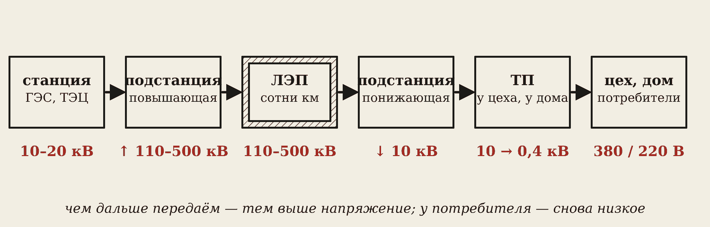
Электроэнергию производят на электростанциях. В Иркутской области это прежде всего ГЭС — Иркутская, Братская, Усть-Илимская. Ещё бывают ТЭЦ (они же греют город), АЭС, солнечные и ветровые станции.
Генератор станции даёт 10–20 тысяч вольт. Дальше энергия проходит цепочку:
- Повышающая подстанция поднимает напряжение до 110–500 кВ.
- ЛЭП несёт энергию на сотни километров.
- Понижающая подстанция у города снижает до 10 кВ.
- Трансформаторная подстанция (ТП) 10/0,4 кВ у цеха или во дворе даёт привычные 380/220 В.
Во всех подстанциях работают трансформаторы — те самые, из пары 18.
2. Зачем ЛЭП высокое напряжение
Мощность трёхфазной сети P = √3 · U · I. Если поднять напряжение, то при той же мощности ток станет меньше. А провода греет именно ток.
ΔP = I² · R
Цеху нужно 100 кВт. При 0,4 кВ: I = 100 000 / (1,73 · 400) ≈ 144 А. При 10 кВ: I ≈ 5,8 А — в 25 раз меньше. Потери ΔP = I²·R меньше в 25² = 625 раз.
Запомните
Чем выше напряжение, тем меньше ток при той же мощности и тем меньше потерь в проводах. Поэтому передают высоким напряжением, а пользуются низким.
3. Электроснабжение цеха
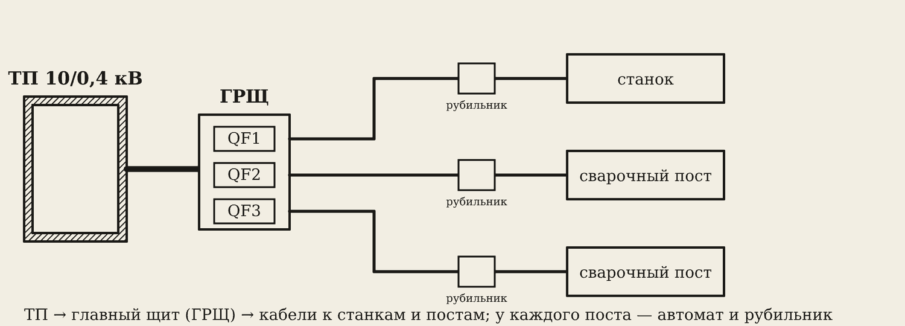
От ТП кабель приходит в главный распределительный щит (ГРЩ). В щите стоят автоматы — каждый защищает свою линию. От них кабели идут к станкам и сварочным постам. У каждого поста — свой автомат и рубильник, чтобы сварщик мог сам отключить аппарат.
Подключает аппарат к сети электрик, а не сварщик. Узнайте, где в вашей мастерской щит и рубильник вашего поста, — при аварии это пригодится.
4. Что ток делает с человеком
Ток действует на организм четырьмя способами:
- тепловое — ожоги;
- химическое — разлагает кровь и ткани;
- механическое — судороги, разрывы мышц;
- биологическое — останавливает сердце и дыхание.
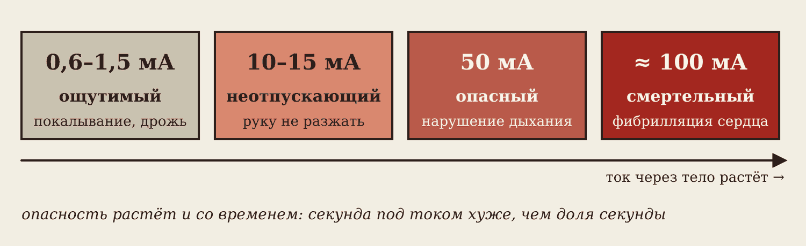
Убивает ток, а не напряжение. Пороги считают в миллиамперах (1 мА = 0,001 А):
| Ток через тело | Что происходит |
|---|---|
| 0,6–1,5 мА | ощущается: покалывание |
| 10–15 мА | неотпускающий: мышцы сводит, провод не разжать |
| около 50 мА | нарушается дыхание |
| около 100 мА | фибрилляция: сердце дрожит и не качает кровь — смерть |
Самое коварное — неотпускающий ток: человек сам себя не освободит.
5. От чего зависит опасность
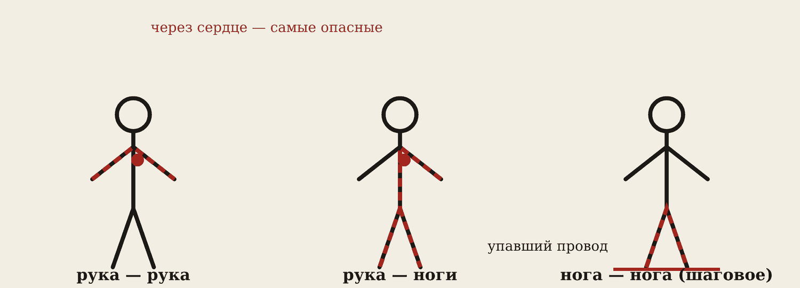
- Сила тока — см. таблицу выше.
- Путь тока. Рука — рука и рука — ноги идут через сердце — самые опасные.
- Время. Секунда под током хуже, чем доля секунды.
- Кожа и помещение. Сухая кожа — тысячи ом, мокрая или с ссадиной — сотни. Сырость, металлический пол, мокрая роба — опаснее.
Осторожно
Шаговое напряжение. Упал провод ЛЭП — земля вокруг под напряжением. Не подходите ближе 8 метров. Выходите «гусиным шагом»: пятка к носку, ноги не отрывать от земли.
6. Безопасные напряжения
Почему переносная лампа в цехе на 12 или 36 вольт? Посчитаем ток через мокрую руку (около 1000 Ом):
220 В → 220 мА — смертельно. 50 В → 50 мА — опасно, но это предел для помещений с повышенной опасностью. 12 В → 12 мА — внутри котла, где вы со всех сторон касаетесь металла.
Запомните
Переносные светильники и инструмент: в помещениях с повышенной опасностью — не выше 50 В; в тесноте, внутри котлов и металлических ёмкостей — не выше 12 В.
У сварочного аппарата на холостом ходу — до 80 В. В сырости и внутри ёмкостей это опасно, поэтому там нужен аппарат с устройством отключения холостого хода.
7. Первая помощь
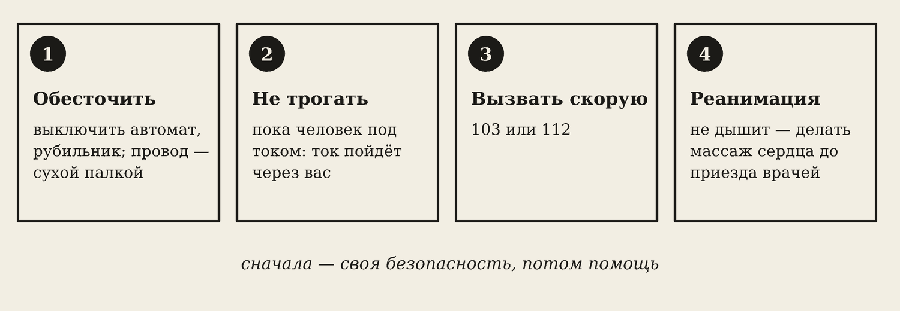
- Обесточить: выключить рубильник поста или автомат в щите. Если быстро не получается — отбросить провод сухой палкой или доской.
- Не трогать человека голыми руками, пока он под током: ток пойдёт через вас. Оттаскивать — за сухую одежду, одной рукой, стоя на сухой доске или резиновом коврике.
- Вызвать скорую: 103 или 112.
- Если не дышит — сердечно-лёгочная реанимация до приезда врачей.
Осторожно
Сначала своя безопасность, потом помощь. Даже если всё обошлось — после удара током обязательно к врачу: сбой ритма сердца может проявиться через несколько часов.
8. Пробой на корпус
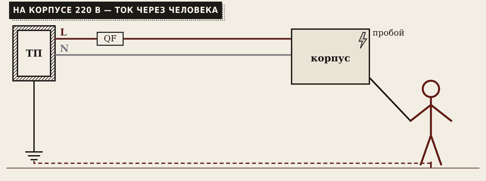
Изоляция внутри аппарата может пробиться — фаза окажется на металлическом корпусе. Снаружи этого не видно, аппарат может даже работать. Нейтраль подстанции заземлена, поэтому земля — это обратный провод. Человек коснулся корпуса — цепь замкнулась через него: около 220 мА.
Автомату на 16 А такой ток — ничто, он не отключит. Нужна защита.
9. Защитное заземление
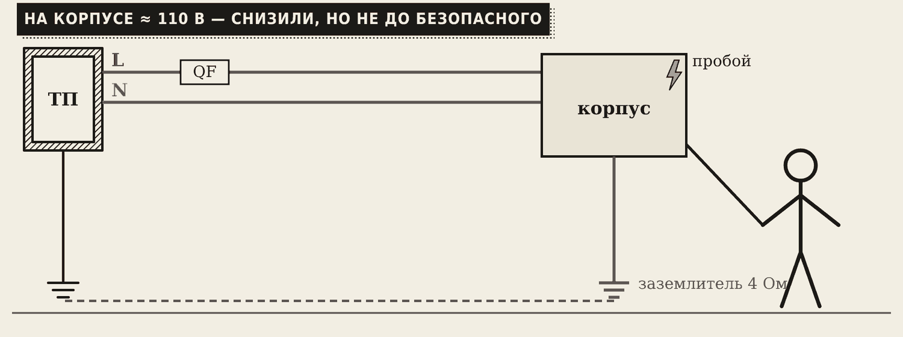
Защитное заземление — корпус соединяют с заземлителем (металлическими электродами в земле). При пробое ток уходит в землю, и напряжение на корпусе снижается.
Но в обычной сети 380/220 В одного заземления мало: на корпусе может остаться около 110 В, а автомат отключит не сразу. Поэтому заземление дополняют занулением и УЗО.
10. Зануление
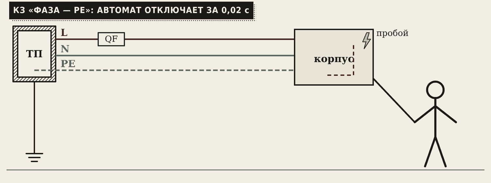
Зануление — корпус соединяют с защитным проводом PE (жёлто-зелёный), который идёт к нейтрали подстанции. Теперь пробой — это короткое замыкание: ток огромный, и автомат отключает питание за доли секунды.
В розетке с заземлением металлические «усики» по краям — это контакт PE. Жёлто-зелёный провод в кабеле — всегда PE и только PE.
Запомните
Заземление снижает напряжение на корпусе. Зануление превращает пробой в КЗ, и автомат отключает питание.
11. Заземление сварочного поста
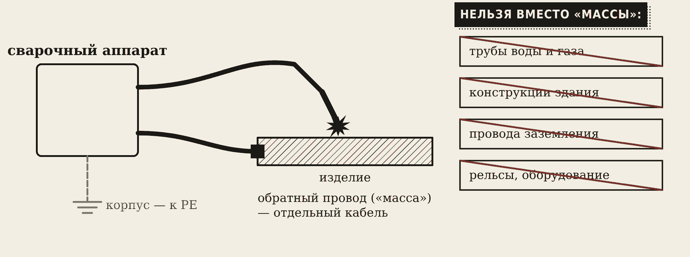
Две разные вещи — не путайте:
- Корпус аппарата обязательно заземляют (соединяют с PE) — это защита от пробоя.
- Изделие подключают отдельным обратным проводом («масса»), зажим — рядом с местом сварки.
Осторожно
Вместо обратного провода нельзя использовать провода заземления, водопровод, газопровод, вентиляцию, конструкции здания и технологическое оборудование. Сварочный ток — сотни ампер: он нагреет трубы, может прожечь газопровод и вызвать пожар.
При сварке внутри ёмкостей и колодцев — аппарат с устройством отключения холостого хода, работа вдвоём, диэлектрические коврик и перчатки.
12. Защитные аппараты
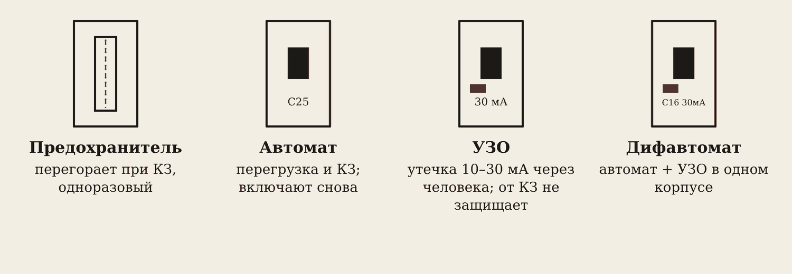
| Аппарат | От чего защищает | Особенность |
|---|---|---|
| Предохранитель | КЗ | плавкая вставка перегорает, одноразовый |
| Автомат | перегрузка и КЗ | после устранения причины включают снова |
| УЗО | утечка 10–30 мА (через человека) | от КЗ не защищает |
| Дифавтомат | всё вместе | автомат + УЗО в одном корпусе |
13. Буква на автомате: B, C, D
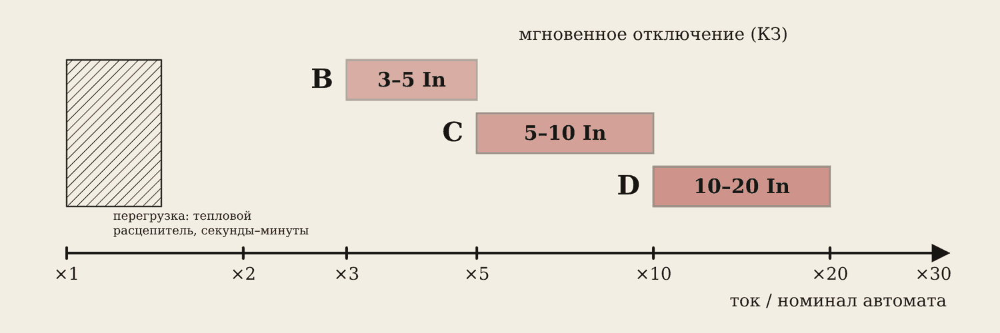
На автомате написано, например, C25. Число — номинальный ток: столько автомат держит сколько угодно. Буква — при каком токе он отключает мгновенно:
- B — при 3–5 номиналах (освещение, розетки);
- C — при 5–10 (обычная нагрузка с двигателями);
- D — при 10–20 (тяжёлый пуск, сварочные трансформаторы).
Двигатели и сварочные аппараты при включении дают бросок тока. Автомат B примет его за КЗ и будет выбивать.
14. УЗО
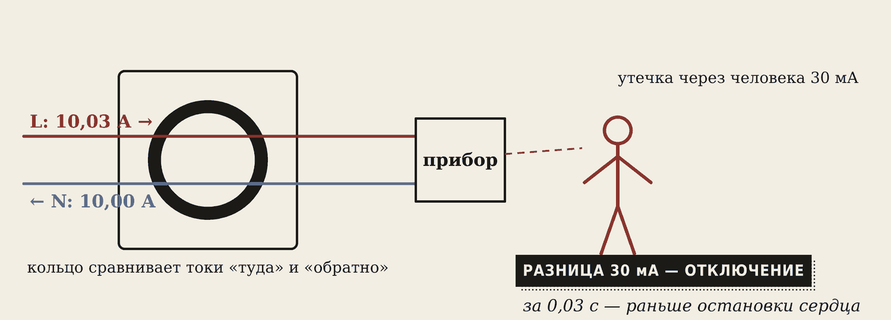
Через кольцо-датчик УЗО проходят фаза и ноль. В норме ток «туда» равен току «обратно». Если часть тока ушла через человека в землю, токи не равны. Разница 30 мА — УЗО отключает за 0,03 с, раньше, чем остановится сердце.
Запомните
УЗО — единственный аппарат, который спасает при касании голого провода фазы. Автомату 30 мА — ничто.
15. Как выбрать автомат для сварочного аппарата
Инвертор берёт из сети 25 А (смотрим в паспорте — не сварочный ток!). Номинал: ближайший больший с запасом — 32 А. Буква: при включении бросок ≈ 4 · 25 = 100 А. B32 мгновенно отключает уже от 3 · 32 = 96 А — будет выбивать. C32 — от 160 А, держит. Берём C32 (или D32). Кабель: должен выдерживать ток автомата. 2,5 мм² — около 25 А, мало. Нужен 4 мм² (≈ 32 А).
Запомните
Ток аппарата из сети ≤ номинал автомата ≤ допустимый ток кабеля.
Словарик
- ЛЭП — линия электропередачи, 110–500 кВ.
- ТП — трансформаторная подстанция 10/0,4 кВ.
- ГРЩ — главный распределительный щит цеха.
- Неотпускающий ток — 10–15 мА: провод не разжать.
- Фибрилляция — сердце дрожит вместо того, чтобы сокращаться.
- Шаговое напряжение — напряжение между ногами у упавшего провода.
- Защитное заземление — соединение корпуса с землёй.
- Зануление — соединение корпуса с защитным проводом PE.
- PE — защитный провод, жёлто-зелёный.
- «Масса» — обратный провод от аппарата к изделию.
- Автомат — отключает при перегрузке и КЗ.
- УЗО — отключает при утечке тока через человека.
- Дифавтомат — автомат и УЗО в одном корпусе.
Эталоны в тетрадь
Перепишите в тетрадь по билетам — каждый эталон на отдельную страницу, с рисунком и строкой «Мой пример».
Производство и передача электроэнергии
Производство, передача и распределение электроэнергии. Почему ЛЭП работают на высоком напряжении. Электроснабжение цеха.
- Производят на электростанциях: ГЭС (Иркутская, Братская), ТЭЦ, АЭС, солнечные и ветровые.
- Передают по ЛЭП при высоком напряжении (110–500 кВ). Чем выше напряжение, тем меньше ток при той же мощности, а значит меньше потери на нагрев проводов (ΔP = I²·R).
- Схема: электростанция → повышающая подстанция → ЛЭП → понижающая подстанция → трансформаторная подстанция 10/0,4 кВ → цех или дом. (Нарисуйте блоками.)
- В цехе: распределительные щиты, от них кабели к станкам и сварочным постам; у каждого поста — свой автомат и рубильник.
Действие тока на человека, первая помощь
Действие электрического тока на организм человека, факторы опасности поражения. Первая помощь.
- Действие тока: тепловое (ожоги), химическое (разлагает кровь), механическое (судороги мышц), биологическое (остановка сердца и дыхания).
- Опасность зависит от: силы тока (0,6–1,5 мА — уже ощущается; 10–15 мА — неотпускающий, руки не разжать; около 100 мА — фибрилляция сердца, смертельно), пути тока (через сердце: рука–рука, рука–ноги), времени, влажности кожи и помещения.
- Переносные светильники в помещениях с повышенной опасностью — не выше 50 В; при работе в тесноте, внутри металлических ёмкостей и котлов — не выше 12 В.
- Первая помощь: сначала обесточить (выключить автомат, отбросить провод сухой палкой), не трогать человека голыми руками. Вызвать скорую (103 или 112). Если не дышит — сердечно-лёгочная реанимация до приезда врачей.
Заземление и зануление
Защитное заземление и зануление: назначение и принцип действия. Заземление сварочного поста.
- Защитное заземление — корпус оборудования соединяют с землёй (заземлителем). При пробое изоляции ток уходит в землю, а напряжение на корпусе становится неопасным.
- Зануление — корпус соединяют с защитным нулевым проводом PE. При пробое возникает короткое замыкание, и автомат сразу отключает питание.
- Пример: в розетке с заземлением есть металлические «усики» — это контакт PE.
- Сварочный пост: корпус аппарата обязательно заземляют. Изделие подключают отдельным обратным проводом («масса»). Вместо обратного провода запрещено использовать провода заземления, водопровод, газопровод, вентиляцию, металлоконструкции здания и технологическое оборудование. При сварке внутри ёмкостей и колодцев аппарат должен иметь устройство отключения холостого хода.
Защитные аппараты
Предохранитель, автоматический выключатель, УЗО. Как выбирают автомат для сварочного аппарата.
- Предохранитель — плавкая вставка перегорает при коротком замыкании. Одноразовый (старые «пробки»).
- Автоматический выключатель (автомат) отключает при перегрузке и при КЗ. После устранения причины его снова включают.
- УЗО отключает при утечке тока на землю (например, через человека) уже при 10–30 мА. Спасает от поражения током, но от КЗ не защищает. Дифавтомат = автомат + УЗО.
- Автомат для сварки выбирают по току, который аппарат берёт из сети (смотрят в паспорте), с небольшим запасом. Пример: аппарат берёт 25 А → автомат 32 А, характеристика C или D (выдерживает пусковые броски). Кабель должен выдерживать ток автомата.
Проверь себя
Сначала ответьте сами — в тетради или вслух. Потом нажмите на вопрос, чтобы увидеть ответ.
1Зачем ЛЭП работают на высоком напряжении?
При той же мощности ток меньше, а потери на нагрев проводов ΔP = I²·R — намного меньше.
2Напряжение подняли в 10 раз. Во сколько раз уменьшились потери в проводах?
В 100 раз: ток меньше в 10 раз, а потери зависят от квадрата тока.
3Какой ток называют неотпускающим?
10–15 мА: мышцы сводит судорогой, провод не разжать.
4Какое напряжение допустимо для переносного светильника внутри металлического котла?
Не выше 12 В.
5Товарищ держит провод под током. Ваше первое действие?
Обесточить: выключить рубильник или автомат. Не трогать его голыми руками.
6Чем зануление отличается от заземления?
Заземление соединяет корпус с землёй и снижает напряжение на нём. Зануление соединяет корпус с PE: пробой становится КЗ, и автомат отключает питание.
7Можно ли подключить «массу» к водопроводной трубе?
Нельзя. Обратный провод подключают прямо к изделию; трубы, конструкции здания и провода заземления вместо него использовать запрещено.
8От чего защищает УЗО и от чего не защищает?
Защищает от утечки тока через человека (10–30 мА). От КЗ и перегрузки не защищает.
9Аппарат берёт из сети 25 А. Какой автомат поставить?
32 А, характеристика C или D; кабель — не меньше 4 мм².
Попробуйте в лаборатории
Откройте на телефоне или компьютере — ничего устанавливать не нужно.
Ответы к «Проверь себя»
- При той же мощности ток меньше, а потери на нагрев проводов ΔP = I²·R — намного меньше.
- В 100 раз: ток меньше в 10 раз, а потери зависят от квадрата тока.
- 10–15 мА: мышцы сводит судорогой, провод не разжать.
- Не выше 12 В.
- Обесточить: выключить рубильник или автомат. Не трогать его голыми руками.
- Заземление соединяет корпус с землёй и снижает напряжение на нём. Зануление соединяет корпус с PE: пробой становится КЗ, и автомат отключает питание.
- Нельзя. Обратный провод подключают прямо к изделию; трубы, конструкции здания и провода заземления вместо него использовать запрещено.
- Защищает от утечки тока через человека (10–30 мА). От КЗ и перегрузки не защищает.
- 32 А, характеристика C или D; кабель — не меньше 4 мм².